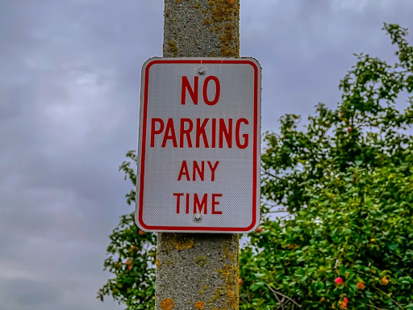
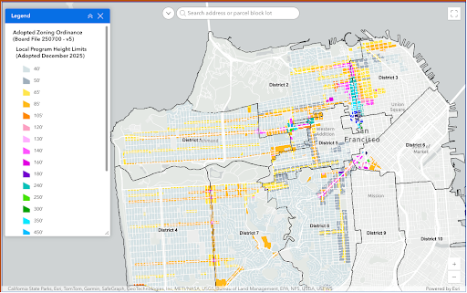

The Sunset and Richmond Do Not Have the Transit Infrastructure For Upzoning
“Transit First” is a Myth

Dan Lurie's upzoning map will raise height limits from the current four stories in many places to as much as eight stories or even higher. It would encourage the demolition of single family housing and even small apartment buildings in favor of larger apartment buildings.

Every building on every block of Clement, Balboa, Fulton, Lincoln, Judah, Noriega, and Taraval is now automatically approved for higher height limits.
There's just one big problem. The city does not have the transit infrastructure needed.
No Parking and No Subways
These buildings will have very little parking. The proposed project at the Ocean Beach Safeway will have 562 apartments but just 281 parking spaces.
San Francisco claims to have a “transit first” policy but the city has never followed through on that. The city has just 19 subway stations compared to almost 500 in New York City. None of those stations are in the Richmond or Sunset.
On a good day it takes 45 minutes to commute to downtown from the outer neighborhoods. It's even worse from some places. From the Ocean Beach Safeway, it will take almost an hour.
It can take 40 minutes on transit to get from homes in the Richmond to shopping in the Sunset and vice-versa. Commuting to Marin or the Peninsula on transit is nearly impossible and requires a car.
This is the result of bad planning. High density neighborhoods require the kind of subways that San Francisco does not have. Despite the “transit first” policy, San Francisco has built just one subway line in the last 50 years with just four stations. New York City built subway stations in its outlying areas before it built high density housing.
The Richmond and Sunset average 1.4 cars for every residential unit. Living on the western side of the city without a car is simply very difficult. It is especially difficult for families. Imagine taking a child, a stroller, a shopping bag, and the family dog on a Muni bus. Walk by any school in the area at 3PM, and you will see a line of cars outside waiting to pick up kids underscoring the necessity of cars for families in this part of the city.
Parking will go from difficult to impossible. These new tenants will be forced to compete for scarce parking spaces on the street. If families can't have cars, many will have no choice but to leave the city.
Designed for Failure
The first thing that banks look at when deciding whether to finance a new project is local transit. No one wants to live somewhere where it is impossible to get anywhere. I strongly doubt these projects will pencil out. If banks do finance these things, it will be a mess for the current resident.